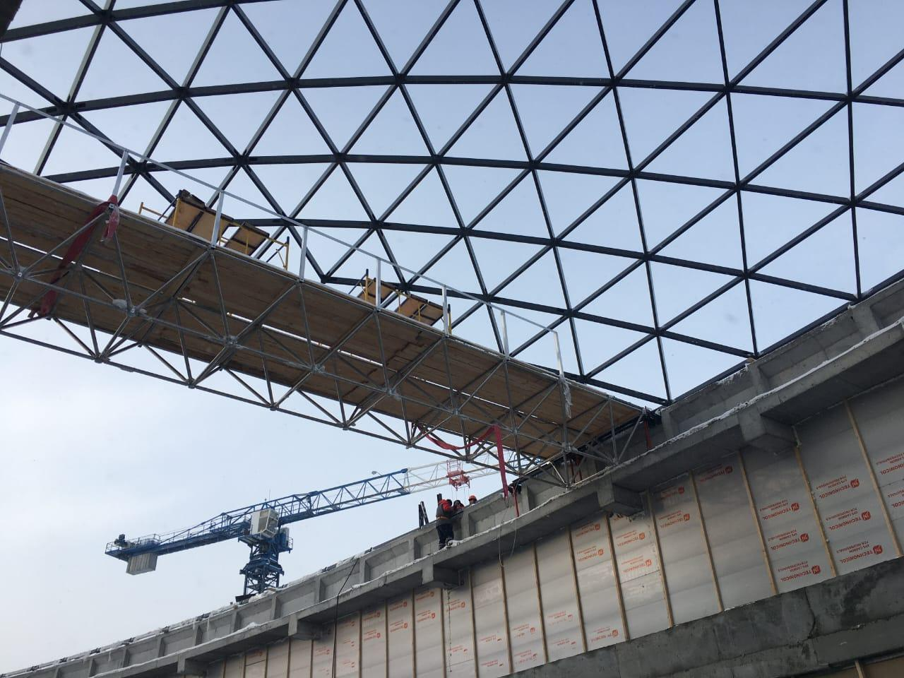
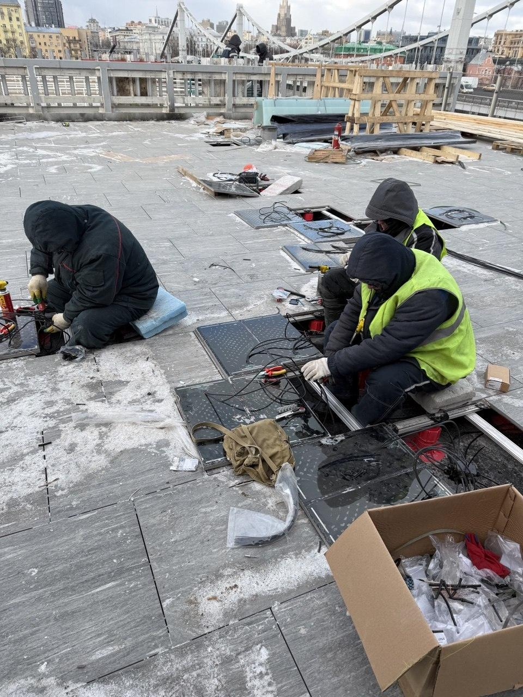

Задача
Свет, вид, тепло, акустика, приватность, безопасность, автоматизация и эксплуатация.
Инженерно-интеграционная компания
Оконный и фасадный контур под архитектуру объекта
Стеклопакет, профиль, фурнитура, монтажный узел, изготовление, документация и гарантийное сопровождение. ОКНОТИКА берёт на себя часть ответственности по окнам, фасадному контуру и сложным светопрозрачным решениям.
Опыт на объектах
У ОКНОТИКИ есть опыт остекления многоквартирных домов и объектов ИЖС разных типов: кирпич, газоблок, дерево, брус, каркасные и комбинированные дома.
Мы работали с ПВХ, алюминием, деревянными и композитными решениями, с разными фасадами, стадиями готовности и подрядчиками на объекте.
Окна связаны с фасадом, стеной, отделкой, геодезией, монтажными материалами, сроками и ответственностью других подрядчиков. Поэтому рассматриваем окно как часть объекта и общей логики строительства.
Свет, вид, тепло, акустика, приватность, безопасность, автоматизация и эксплуатация.
Профиль, стеклопакет, фурнитура, уплотнение, монтажный узел и гарантийные размеры.
Фасад, проёмы, геодезия, подрядчики, график, логистика, фотофиксация и документы.
Решение, которое выглядит спокойно, работает в эксплуатации и снижает риск рекламаций.
Продуктовая полка
ОКНОТИКА собирает светопрозрачную систему из частей: материал, профильная система, стеклопакет, фурнитура, монтажный узел, изготовление, документация и сервис. Логика простая: сначала объект и архитектурная задача, потом подбор продукта.

ПВХ
ПВХ работает в задачах своего масштаба: квартиры, балконы, ИЖС комфортного уровня и коммерческие конструкции в пределах гарантийных размеров. Результат задают переработчик, стеклопакет, фурнитура, армирование, покрытие, монтаж и сервис.

Алюминий
Когда появляются большие проёмы, фасады, порталы, входные группы, сложные углы, вес и нестандартная геометрия, важны профиль, жёсткость, долговечность, внешний вид и инженерная стыковка с объектом. Систему выбираем под задачу, а не под один бренд.

Дерево / Stoller
Дерево отвечает за тактильность, тепло материала и премиальное ощущение объекта. В дорогом ИЖС окно часто становится частью интерьера так же, как пол, камень, мебель или лестница.

Карбон / Carbon Glass
Карбон — отдельный язык светопрозрачных конструкций: максимальная светопрозрачность, стеклянная компланарность, минимальный визуальный шум и современный технологичный образ.

Стеклопакеты / Art Glass
Стеклопакет влияет на свет, тепло, акустику, солнце, приватность, безопасность, цветопередачу и риск конденсата. Art Glass добавляет контроль качества для объектов с высокой ценой визуальной ошибки.

ФУТУРУСС
Скрытые петли, цапфы, ответные планки, уплотнение и логика прижима отвечают за закрывание, защиту от продувания, акустику, старение и стабильность механики. В ПВХ-системах закрываем до 100% решений, по алюминию, дереву и карбону — до 95%.

OKNOTIKA × ФУТУРУСС
Умное окно — интеллектуальная светопрозрачная система со скрытым управлением створкой, датчиками, сценариями проветривания и интеграцией в умный дом или BMS через совместимые платформы и шлюзы. Материалы: ПВХ, алюминий, дерево и карбон.
Открыть страницу автоматики →
Thermo Glass / Thermo Pad
Thermo Glass — стекло с подогревом для остеклённых зон, бань, зимних садов и видовых помещений. Thermo Pad — модульная система снеготаяния для кровель, террас, балконов, ступеней, входных групп, дорожек и парковок.

Protectapeel
Временное снимаемое полимерное покрытие на водной основе. Подходит для оконных и фасадных конструкций, металла, латунных элементов и гладких непористых поверхностей. Дерево — только после теста.

Ралюма
Прозрачные системы для террас, веранд, зимних садов и порталов: подъёмные, складные и раздвижные сценарии, тёплые версии, минимальная видимая ширина профиля и спокойная интеграция в архитектуру.

Рубикон
Разработка нестандартных решений СПК, узлов примыкания и реализация сложных запросов на объекте: когда стандартного каталога мало, а архитектурную задачу надо довести до результата.
Проектирование · монтаж · документация
Анализ проекта, фасада, монтажных ограничений и узлов примыкания. Проёмы, геодезия, материалы, установка по согласованным узлам, акты, фотофиксация, DWG и книга остекления для премиальных объектов.
Алюминиевые системы
ОКНОТИКА подбирает алюминиевую систему не по вывеске бренда, а по месту в объекте: первые этажи, фасадная плоскость, премиальный частный сегмент или крупноформатная автоматика. Так проще говорить с архитектором, девелопером и частным заказчиком на одном языке.
Первые этажи
Рабочие системы для первых этажей, входных групп, витражей, коммерческих помещений и объектовых задач, где важны понятная экономика, доступность профиля, жёсткость и нормальная переработка. Алюмарк держим в этой же рабочей полке как доступную альтернативу по задаче.
Фасады из алюминия
Фасадные решения, стойко-ригельные системы, витражные плоскости, алюминиевые окна и двери в составе фасада. Здесь решают статика, теплотехника, узлы примыкания, допуски, монтажная последовательность и архитектурная чистота.
Премиальный алюминий
Решения для дорогого частного сегмента, панорамных порталов, выразительных входных групп и объектов, где цена визуальной ошибки высокая. Тут важны тонкая линия профиля, ощущение продукта, фурнитура, покрытие и сценарий эксплуатации.
Крупноформатная автоматика
Крупные минималистичные раздвижные конструкции, автоматизированные порталы и 5-метровые сценарии, где нужен максимум стекла, минимум визуального профиля и спокойное движение тяжёлой створки. Финальная применимость — после расчёта геометрии, веса и узлов.
Как выбираем
Кейсы
ОКНОТИКА остаётся единым центром ответственности за маршрут реализации, а в монтажной сети — команды с опытом работы на жилых, коммерческих, социальных и частных объектах.

Монтажные подрядчики ОКНОТИКИ
Опыт на крупных жилых, коммерческих и социальных объектах. В числе объектов — Level, A101, Самолёт, G‑3, Ленинградский вокзал, СК «Олимпийский». Подробную карту объектов отправляем по запросу.

Светопрозрачная кровля сложной геометрии.

Зенитное остекление в ресторанном интерьере.
Крупноформатная светопрозрачная конструкция.

15 000 м² Thermo Pad для эксплуатируемых поверхностей.
Команда
Без колл-центров и “передам ответственному”. На проекте есть стратегия, коммерция, продуктовые направления, исполнение, финансы, бухгалтерия и проектная координация.

Директор по развитию
Стратегия, нетворкинг, партнёрства и внедрение новых продуктов.

Генеральный директор
Операционное управление, распределение ответственности и контроль исполнения обязательств.

Коммерческий директор
Ценовая политика, ключевые клиенты и коммерческие условия проектов.

Исполнительный директор
Подрядчики, производство работ, сроки, качество и доведение объектов до результата.

Руководитель проектов
Связной на объекте: координирует монтажников, фиксирует вопросы и держит коммуникацию с командой.

Руководитель проекта «Умное окно»
Ведёт продукт OKNOTIKA × ФУТУРУСС: презентации, технические консультации и развитие решения.

Менеджер проектов
Помогает вести проектные задачи, коммуникацию с клиентами и передачу решений в работу.

Главный бухгалтер
Закрывающие документы, бухгалтерский учёт и взаимодействие по первичке.

Финансовый директор
Финансовое планирование, бюджетирование и контроль денег проекта.
Юридическое подтверждение
ООО «ОКНОТИКА» является членом СРО Ассоциация «ЭнергоСтройАльянс» (СРО-С-089-27112009), регистрационный номер члена СРО — 1576.
Контакт
Напишите Александру: пришлите задачу, чертежи, фото объекта или просто желаемое архитектурное решение. Дальше соберём варианты.
АдресМосква, улица Макаренко, 2/21с2
ГеографияМосква, регионы РФ, страны СНГ и проекты с выездной монтажной логистикой